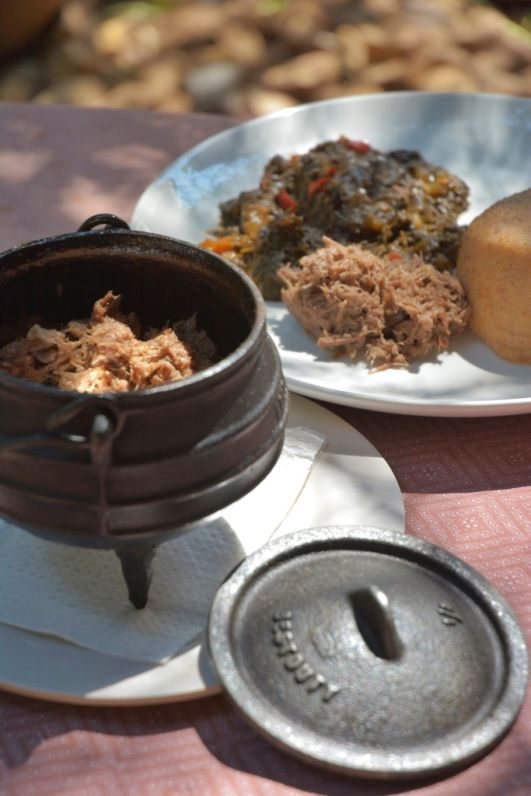
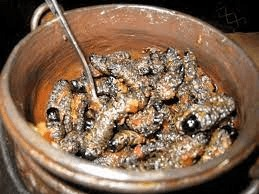
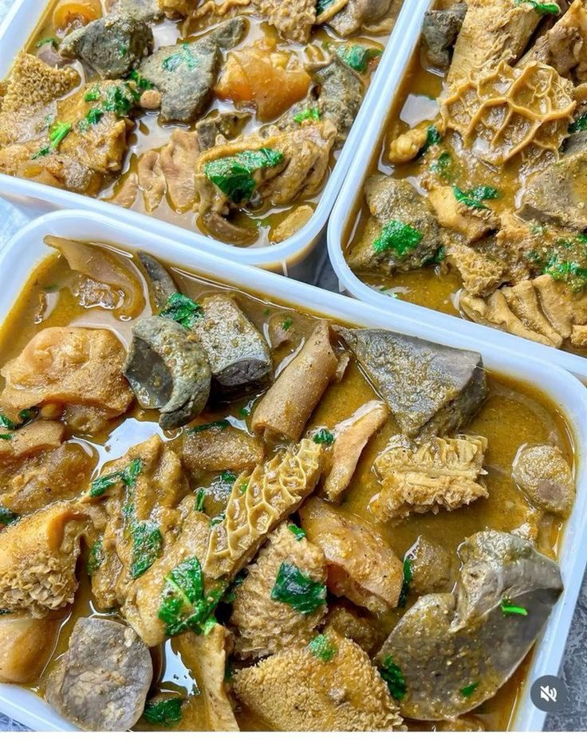
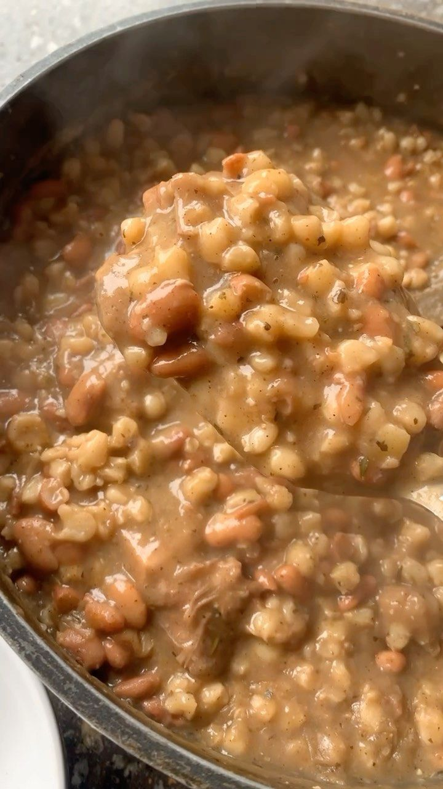
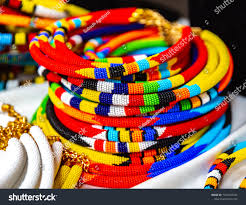
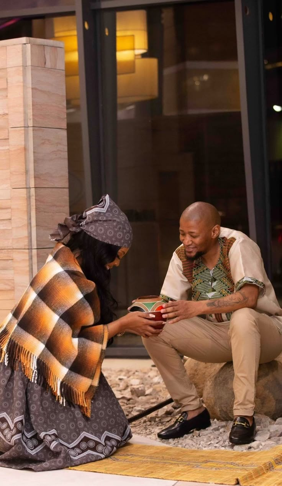
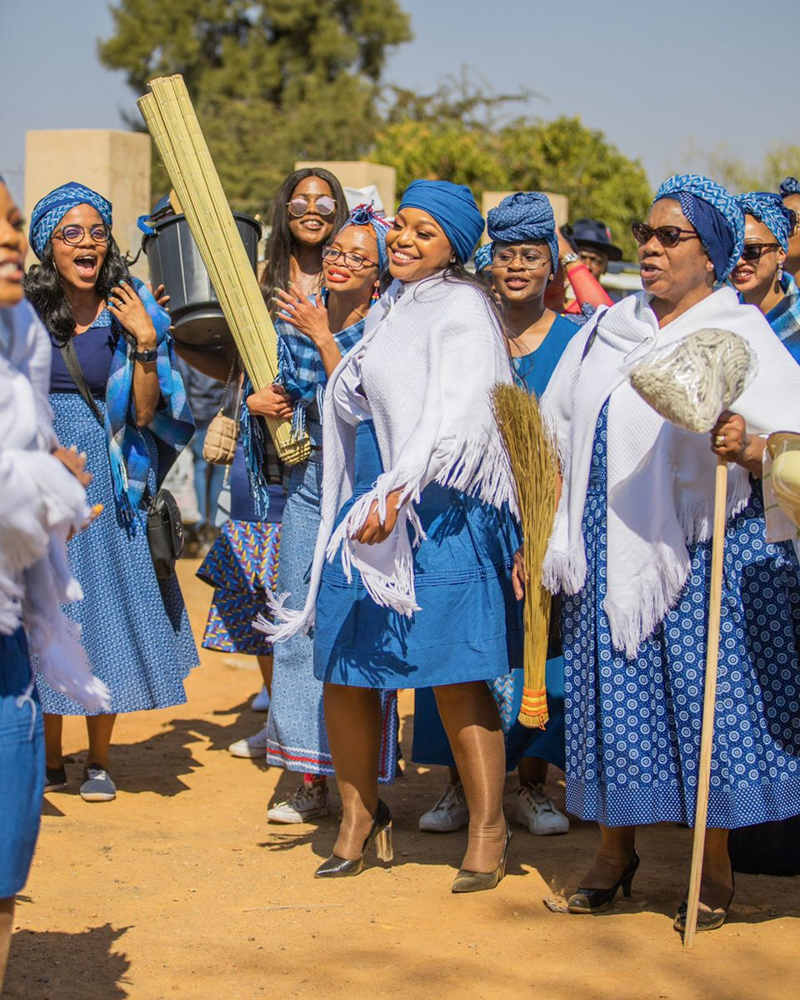

Traditional spinach cooked with beans - a true Setswana comfort food
P49

Slow-cooked shredded beef - Botswana's national dish
P85

Mopane worms - a delicious, protein-rich Botswana delicacy
P65

Sorghum porridge cooked with wild melon - a staple Botswana breakfast or side dish
25

Chopped tripe and offal slow-cooked with spices - popular at celebrations
P45

Hearty mix of stamped maize and beans - a nutritious everyday favourite
P60

Vibrant, voluminous dresses and distinctive hats worn with pride by Herero women in Botswana
P243

Iconic German-print fabric dresses, a staple of modern and traditional Setswana women's attire
P855

Intricate handmade bead jewelry and adornments full of cultural symbolism
P75

Elegant traditional clothing for men and women, symbolising cultural pride and identity
P900

Beautiful bridal and groom wear for the Patlo ceremony, rich in symbolism and respect
P600